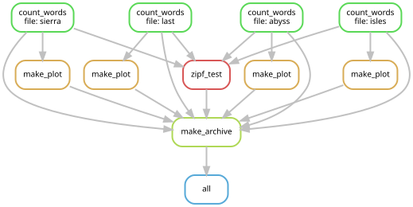

I Suck At Coding: A Manifesto
How I learned to stop worrying and feel the vibecoding
W. H. W. Thompson
My Scientific Albatross
The Summer School Trap
The Project
- Goal: Fit opinion spreading models to network data.
- Start: First year of grad school workshop.
- Initial Code: Quick & dirty PyTorch.
The Vibe
“It’ll be 6 months, tops, to a publication.” 🤡
The Descent: Feature Creep
Phase 1: Portability
- Problem: 5 collaborators on every OS.
- “Solution”: JSON configs + nested Shell wrappers.
Phase 2: HPC (VACC)
- Problem: Local vs. Cluster batch jobs.
- “Solution”: Custom J2 templating system.
The Final Collapse
Over-Engineering
- SQLite locking? Move to MySQL.
- UVM Firewall? Polymorphic IO.
- Filename limits? Build an ORM.
The End
- 2026: No publication.
- Framework is too convoluted to use.
- Collaborators keep force-pushing to
mainbecause they hate the code.
The Hard Truth
“This was all my fault.”
A Moral Failure

Without SLURM We Would Have Cured Cancer By Now
The Iron Rule of Scientific Software Development
- If you take the time to build out code the right way you will never use it
- If you write sloppy code it will bite you in the ass
- Damned if you do. Damned if you don’t.
The Python Paradox
- Python is a TERRIBLE language for scientific computing.
- Nothing about the language is inherently good for science.
- Most tools were developed by researchers as a “side-hustle.”
- The Goal: How can we contort Python to be at least “okay”?

The Dirty Secret…
- If you are a (non-bench) scientist in 2026: YOU ARE A SOFTWARE DEVELOPER.
- Most of your time isn’t in the lab; it’s writing and running code.
- Fact: Scientists are (mostly) bad software developers.
Logic of my Life
The eternal struggle: Time spent to automate vs. overhead accumulated.

The Good News
- Fact: LLMs change the ROI on automation.
- Fact: Being an effective vibe coder means BEING AN EFFECTIVE CODER.
Your Workflow
The Process
- You have data & simulation parameters.
- You have a model (statistical/ML/physics).
- You want to run sweeps with fixed logic.
- You want to collect & visualize results.
- You want to turn plots into a publication.
The Goal
Automate the plumbing so you can focus on the science.
Example Project
- Train a BERT to correctly classifer thhe AG news dataset
- 4 classes: Buisness, Sci/Tech, Sports/World
- Train an MLP classifier on BERT embeddings
The Tools
1. Modularity
1. The Environment
Reproducible UV
- Speed: Orders of magnitude faster than pip/conda.
- Locking:
uv.lockensures your code runs everywhere.
Modular Source
- No More Notebooks: Logic lives in
.pymodules. - Git Flow: Use Pull Requests to manage complexity.
Docs: astral.sh/uv | git-scm.comhttps://github.com/WillHWThompson/PythonForScientificDevelopment
2. The Workflow
Workflow Management
- Automation: Snakemake tracks results and dependencies.
- VACC Scaling: Integrated Slurm profiles for zero-effort submission.
- Amnesia Proof: Automatically identifies stale results.
- Local vs Cloud: Run 1 locally; run 1,000 on the cluster.
Workflow DAG

Docs: snakemake.github.io | vacc.uvm.edu
3. The Data Lifecycle
Validated Data
- Pydantic: Catch errors at the boundary.
- LLM Context: Structured slots for model reasoning.
High-Perf Analytics
- Parquet + DuckDB: SQL speed on flat files.
- Testing: Shape checks to verify the “vibe.”
Docs: duckdb.org | pydantic.dev
4. Unit Testing
Pytest Rigor
- Logic Checks: Validate each part of your research code.
- Integration: Ensure the whole system plays together nicely.
GitHub Actions
- Automation: Run tests on every push.
- Trust: Know your “vibe” is actually correct.
Live Diagnostics
Research Dashboard
We don’t just generate plots; we generate interactive insights.
Summary
- Accept that you are a Developer. We are all software engineers now.
- Standardize Environments. Use UV and lockfiles.
- Automate Workflows. Let Snakemake handle the graph.
- Verify and Aggregate. Use DuckDB for insane speed.
- Focus on the Science. Let automation handle the heavy lifting.

I Suck at Coding: A Manifesto